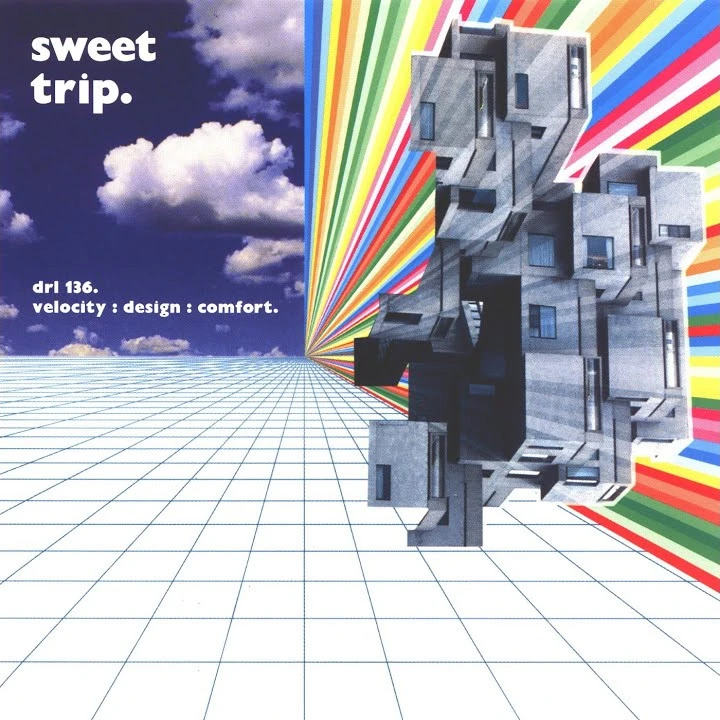
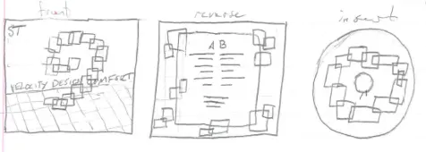
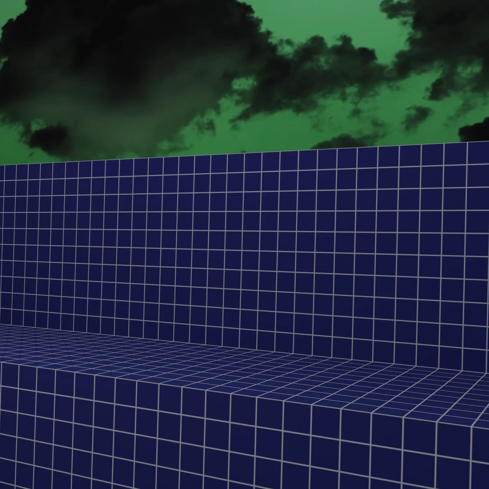
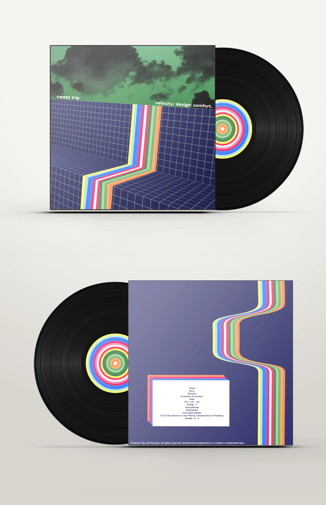

The basics of the assignment
This project was submitted as an assignment in a Fall 2020 graphic design course I took, Foundations of Design. The gist of the assigment was that I had to find an album that I liked, and redesign the cover. My main focus in this project was learning Blender, a popular 3D modelling and animation program, as well as representing the feelings the album gave me, while staying faithful to the original cover art (see below).
Why I chose this album
I chose this album for a couple of reasons, number one being that I just loved the music. Sweet Trip is a very nice and noisy band, which is what I tend to like in music, but they also make good use of silence and/or quiet drones in their songs that provide a nice contrast and give the listener time to think about the more busy parts of the song as they go by. I also chose this album because I had some good ideas for scenes that could be made partially or completely in Blender, which ended up being in the final product.
Finding some inspiration
I wanted to start with some sketches, and so looked to various places for inspiration. I found some inspiration in various random places. I wanted to have take some elements from the early computer graphics era, and took a lot of inspiration from old math textbook covers.
Starting to make thumbnails
My next objective was to start drawing some ideas. I drew some tiny squares on my paper and put a bunch of shapes onto paper to see what kinds of layouts would look good for the ideas I was having. The first idea I really liked was making a bunch of overlapping rectangles, of various colors. I would choose the palette from the ribbon of color from the original album cover, and make each rectangle slightly transparent to get a nice color mixing effect on the overlapping portions.
The second idea I had was one I was really liking at this point. I wanted to make a scene of grid covered planes like so many of the early 3D rendered pieces I had seen so far, and put a waterfall of colors, making use of the same colors from the original album. I also wanted to use clouds in the background, same as the original cover.
Getting started in Blender
I had to read a lot of documentation and watch a lot of videos just to understand some of the common things people do in Blender to make working on things easier. I'm still learning a lot about the program to this day, I recently made the banner for this website in Blender and I'm pretty proud of that. Anyways, to make the scene that I would place my waterfall thing on, I simply looked for a nice procedural grid texture, which was actually pretty easy to find. I searched up the internet and found a nice video that had exactly what I wanted. I studied this video, figured my way around blender, and came up with this little scene.
Pulling it together
At this point in the assignment, I was running out of time, and so I pulled the background I had constructed into illustrator to add the ribbon of colors. I tried to use a new strategy for the ribbon, I actually made it as a group of rectangles, and then used the warp mesh tool on them. This let me define a number of points in the group that I could move around to flex the rectangle around. It is easiest to understand when seeing what I did on the back cover, with the nice wavy line that gives a good illusion of depth.
Dressing it up nice
The last part of the project was cut out for me. My cool professor has provided a photoshop mock-up file for me to just plop my design into. This gave it a nice sheen and presented it as it would be in a product placement. This is also a good time to bring up the insert I made that I haven't really mentioned at all. I wanted it to share some consistent element throughout with the other two designs and so I decided that was going to be the ribbon's colorway.
My thoughts on the project
Overall, I'm very happy with how this project turned out. I learned a lot about Blender, and love using it today. If I had more time I would have probably taken the final images into photoshop and done some post proccessing, but I needed to cut the work short to make the deadline. This is a project I will always tell myself I will revisit, but at the same time I'd love to just get into Blender and try to make the whole thing from scratch, so I'll just leave it as is.